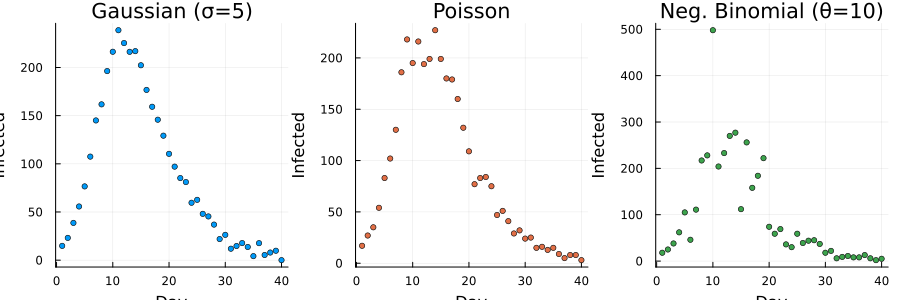
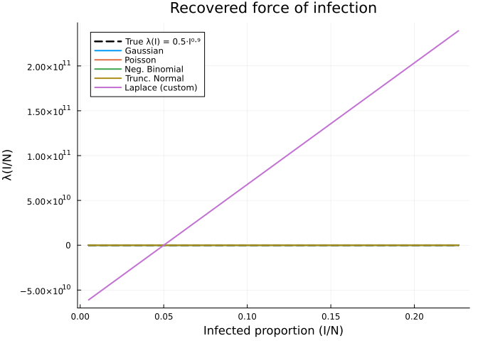
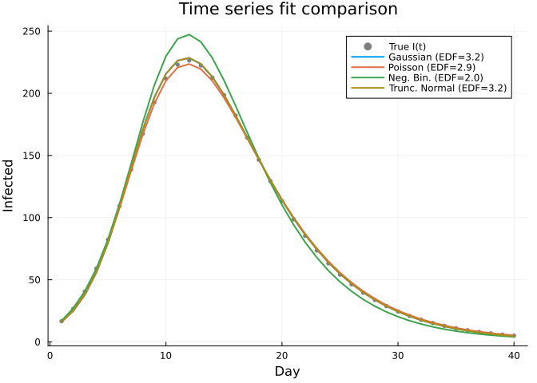
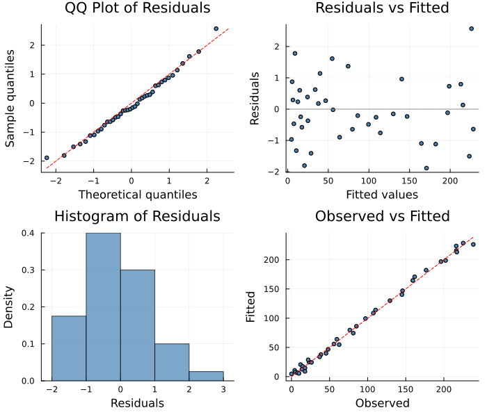

Likelihood Families
Overview
Real-world ecological data are rarely Gaussian. Count data (e.g., population surveys) are better modeled with Poisson or Negative Binomial likelihoods, which properly account for the discrete, non-negative nature of the observations.
PartiallySpecifiedModels.jl supports five likelihood families:
| Family | Typical use | Variance function |
|---|---|---|
Gaussian() | Continuous measurements | $\sigma^2$ (profiled) |
Poisson() | Count data, no overdispersion | $\mu$ |
NegativeBinomial(θ) | Overdispersed count data | $\mu + \mu^2/\theta$ |
TruncatedNormal(sigma=σ) | Non-negative continuous data | $\sigma^2(1 - \delta(\mu))$ |
CustomLikelihood(f) | Any distribution | Via ForwardDiff |
This vignette demonstrates each family on an SIR epidemic model with a nonlinear force of infection, following the partially specified model example from Frost (2022).
Setup
using PartiallySpecifiedModels
using PartiallySpecifiedModels: solve
using OrdinaryDiffEq
using Plots
using Random
Random.seed!(11)TaskLocalRNG()Synthetic SIR Data
Following McCallum et al. (2001), we consider a power-law force of infection $\lambda(I) = \beta I^\alpha$ where $0 < \alpha < 1$ produces sublinear (saturating) transmission. The true parameters are $\beta = 0.5$, $\gamma = 0.25$, $\alpha = 0.9$.
N = 1000.0
β_true = 0.5; γ = 0.25; α = 0.9
foi_true(I) = β_true * I^α
function sir_true!(du, u, p, t)
S, I, R = u
λ = foi_true(I / N)
du[1] = -λ * S
du[2] = λ * S - γ * I
du[3] = γ * I
end
u0 = [990.0, 10.0, 0.0]
tspan = (0.0, 40.0)
data_times = collect(1.0:1.0:40.0)
prob_true = ODEProblem(sir_true!, u0, tspan)
sol_true = OrdinaryDiffEq.solve(prob_true, Tsit5(); saveat=data_times)
I_true = [sol_true(t)[2] for t in data_times]40-element Vector{Float64}:
16.669527851232353
26.553862280324694
40.47437576014847
59.02810528571919
82.28130198842759
109.45238706403795
138.74130173692484
167.48655903253388
192.6935563523616
211.7590450306315
⋮
17.804073419006215
15.174346282151912
12.937049849823216
11.035947855015564
9.421188555741582
8.049056449786535
6.882160505788482
5.889869188743626
5.045729281909004Generate three observation types
We observe the number of infected individuals $I(t)$ under three noise models:
# 1. Gaussian: I(t) + normal noise (continuous, could be negative)
y_gauss = I_true .+ 5.0 .* randn(length(data_times))
y_gauss = max.(y_gauss, 0.01)
# 2. Poisson: I(t) as integer counts
function sample_poisson(μ)
μ = max(μ, 0.01)
count = 0; s = 0.0
while true; s -= log(rand()); s > μ && break; count += 1; end
Float64(count)
end
y_poisson = sample_poisson.(I_true)
# 3. Negative Binomial: overdispersed counts (Gamma-Poisson mixture)
θ_nb = 10.0
function sample_negbin(μ, θ)
μ = max(μ, 0.01)
g = 0.0
for _ in 1:round(Int, θ); g -= log(rand()); end
g = g / θ * μ
sample_poisson(g)
end
y_negbin = [sample_negbin(I, θ_nb) for I in I_true]
plot(
scatter(data_times, y_gauss, ms=3, title="Gaussian (σ=5)",
ylabel="Infected", label=nothing, color=1),
scatter(data_times, y_poisson, ms=3, title="Poisson",
ylabel="Infected", label=nothing, color=2),
scatter(data_times, y_negbin, ms=3, title="Neg. Binomial (θ=10)",
ylabel="Infected", label=nothing, color=3),
layout=(1,3), size=(900,300), xlabel="Day"
)
The PSM Model
We model the SIR dynamics with an unknown force of infection $\lambda(I)$ as a function of the infected proportion $I/N$. This follows Wood (2001): the model structure (SIR) is known, but the functional form of transmission is left unspecified and estimated from data.
function sir_psm!(du, u, p, t)
S, I, R = u
λ = max(p.λ(I / p.N), 0.0)
du[1] = -λ * S
du[2] = λ * S - p.γ * I
du[3] = p.γ * I
endsir_psm! (generic function with 1 method)The B-spline domain covers the range of $I/N$ observed in the data. We use a helper to create fresh approximators with a given knot count:
FOI domain: I/N ∈ (0.0, 0.27)
make_approx (generic function with 1 method)Fitting with Gaussian Likelihood
For continuous measurements, Gaussian() profiles out the scale parameter $\sigma^2$ in the REML objective:
\[V_{\text{REML}}(\boldsymbol{\lambda}) = -\frac{n - M_p}{2}\log\hat\sigma^2 + \frac{1}{2}\log|S^\lambda|_+ - \frac{1}{2}\log|H|\]
Gaussian — SS: 925.4, EDF: 3.22, λ: [6090.0]Fitting with Poisson Likelihood
For count data, Poisson() uses the variance function $V(\mu) = \mu$. The IRLS working weights on the identity scale are $\tilde{w}_i = w_i / \mu_i$, giving more weight to observations where the mean is small (lower variance). The LAML objective uses the full Poisson log-likelihood rather than a profiled scale:
\[V(\boldsymbol{\rho}) = \ell(\hat\beta) - \tfrac{1}{2}\hat\beta' S^\lambda \hat\beta + \tfrac{1}{2}\log|S^\lambda|_+ - \tfrac{1}{2}\log|H| + \tfrac{M_p}{2}\log 2\pi\]
For count data, the LAML solver uses Pearson-scaled Fellner-Schall updates and a Gaussian warm-start phase to ensure reliable convergence with identity-link IRLS weights.
Poisson — Loss: 4382.0, EDF: 2.86, λ: [248.0]Fitting with Negative Binomial Likelihood
NegativeBinomial(θ) adds an overdispersion parameter $\theta$ controlling the variance: $\text{Var}(Y) = \mu + \mu^2/\theta$. Smaller $\theta$ means more overdispersion.
NegBin — Loss: 114300.0, EDF: 2.0, λ: [2.34e9]Fitting with Truncated Normal Likelihood
For non-negative continuous measurements (e.g., population densities, concentrations), TruncatedNormal(sigma=σ) models data as drawn from a Normal($\mu$, $\sigma^2$) truncated below at 0. Unlike Gaussian, the truncation ensures the likelihood properly handles observations near zero without assigning probability to negative values.
The log-likelihood for a single observation is:
\[\ell(y_i \mid \mu_i, \sigma) = -\frac{(y_i - \mu_i)^2}{2\sigma^2} - \log\sigma - \frac{1}{2}\log 2\pi - \log\Phi\!\left(\frac{\mu_i}{\sigma}\right)\]
where $\Phi$ is the standard normal CDF. The IRLS weights use the Fisher information, which accounts for the truncation adjustment.
TruncNormal — Loss: 926.0, EDF: 3.17, λ: [280.0]Custom Likelihoods
For distributions not built in, CustomLikelihood accepts a scalar log-likelihood function $\ell(y, \mu)$. IRLS working weights are derived automatically via ForwardDiff:
\[\tilde{w}_i = w_i \cdot \left(-\frac{\partial^2 \ell}{\partial \mu^2}\bigg|_{\mu=\hat\mu_i}\right)\]
Here we demonstrate with a Laplace (double-exponential) likelihood, which is more robust to outliers than the Gaussian. We create data with a few outlier observations:
Laplace — Loss: 573500.0, EDF: 0.0[!NOTE]
The built-in
Gaussian()profiles out the scale parameter $\sigma^2$ in the REML objective, making it scale-free. Custom likelihoods use the raw log-likelihood without scale profiling, so you need to choose the scale parameter (here $b=10$) appropriately for your data.
Comparing Recovered $\lambda(I)$
The key output of a PSM is the recovered unknown function. Here we compare the estimated force of infection $\hat\lambda(I/N)$ across all five likelihood families against the true power-law $\lambda(I) = 0.5 \cdot I^{0.9}$.
The plot is restricted to the range of $I/N$ actually observed in the data. Outside this range the spline is unconstrained by data and controlled only by the smoothing penalty, so extrapolation is unreliable and can diverge significantly — especially for families (Gaussian, Truncated Normal) whose profiled scale parameter produces different smoothing from count-based families.
# Restrict grid to the observed data range
Imin_obs = minimum(I_true) / N
Imax_obs = maximum(I_true) / N
I_grid = range(Imin_obs, Imax_obs, length=200)
λ_truth = [β_true * I^α for I in I_grid]
p1 = plot(I_grid, λ_truth, label="True λ(I) = 0.5·I⁰·⁹", lw=2.5,
color=:black, ls=:dash,
xlabel="Infected proportion (I/N)", ylabel="λ(I/N)",
title="Recovered force of infection")
for (sol, name, col) in [
(sol_gauss, "Gaussian", 1),
(sol_poisson, "Poisson", 2),
(sol_nb, "Neg. Binomial", 3),
(sol_trnorm, "Trunc. Normal", 5),
(sol_laplace, "Laplace (custom)", 4)]
if haskey(sol.unknown_functions, :λ)
λ_est = [sol.unknown_functions[:λ](I) for I in I_grid]
plot!(p1, I_grid, λ_est, label=name, lw=2, color=col)
end
end
p1
[!NOTE]
Why does smoothing differ across likelihoods?
Different families produce different amounts of smoothing for three reasons:
- Different data: Each family sees data generated by a different noise process (Gaussian noise, Poisson counts, etc.), so even with an identical smoother the optimal fit differs.
- Different effective scale: The Fellner–Schall update computes $\lambda_{\text{new}} = \hat\phi \times \text{edf} / (\beta' S \beta)$, where $\hat\phi$ is the effective dispersion. For Gaussian, $\hat\phi = \hat\sigma^2$ (profiled, often $\gg 1$); for Poisson, $\hat\phi$ is the Pearson dispersion (typically $\approx 1$). This scale difference directly affects the smoothing parameter.
- Different IRLS weights: Poisson weights ($w / \mu$) down-weight high-count observations relative to Gaussian (unit weights), changing which parts of the curve are fitted most tightly.
Comparing Time Series Fits
p2 = scatter(data_times, I_true, ms=3, color=:black, alpha=0.5,
label="True I(t)", xlabel="Day", ylabel="Infected",
title="Time series fit comparison")
for (sol, name, col) in [
(sol_gauss, "Gaussian", 1),
(sol_poisson, "Poisson", 2),
(sol_nb, "Neg. Bin.", 3),
(sol_trnorm, "Trunc. Normal", 5)]
pred = sol.fitted_values[:, 1]
plot!(p2, data_times, pred, label="$(name) (EDF=$(round(sol.edf, digits=1)))",
lw=2, color=col)
end
p2
Diagnostic Plots
A standard 4-panel diagnostic display assesses residual behaviour for the Gaussian fit, which serves as the baseline likelihood.
using PartiallySpecifiedModels: appraise
diag = appraise(sol_gauss)
p_qq = scatter(diag.qq_theoretical, diag.qq_sample,
xlabel="Theoretical quantiles", ylabel="Sample quantiles",
title="QQ Plot of Residuals", ms=3, legend=false, color=:steelblue)
mn, mx = extrema(vcat(diag.qq_theoretical, diag.qq_sample))
plot!(p_qq, [mn, mx], [mn, mx], color=:red, ls=:dash, label="")
p_rf = scatter(diag.fitted, diag.residuals,
xlabel="Fitted values", ylabel="Residuals",
title="Residuals vs Fitted", ms=3, legend=false, color=:steelblue)
hline!(p_rf, [0], color=:gray, ls=:dot)
p_hist = histogram(diag.residuals, normalize=:pdf,
xlabel="Residuals", ylabel="Density",
title="Histogram of Residuals", legend=false, color=:steelblue, alpha=0.7)
p_of = scatter(diag.observed, diag.fitted,
xlabel="Observed", ylabel="Fitted",
title="Observed vs Fitted", ms=3, legend=false, color=:steelblue)
mn2, mx2 = extrema(vcat(diag.observed, diag.fitted))
plot!(p_of, [mn2, mx2], [mn2, mx2], color=:red, ls=:dash, label="")
plot(p_qq, p_rf, p_hist, p_of, layout=(2, 2), size=(700, 600))
Durbin-Watson: 2.401[!TIP]
See Also
- Vignette 11: Count Data SIR — applied epidemiological count data with overdispersion
- Vignette 28: Fisheries — Poisson counts with shape-constrained recruitment
Summary
| Likelihood | When to use | LAML behaviour |
|---|---|---|
Gaussian() | Continuous, symmetric errors | Profiled REML ($\sigma^2$ estimated) |
Poisson() | Counts, variance ≈ mean | Full marginal likelihood, IRLS weights $w/\mu$ |
NegativeBinomial(θ) | Overdispersed counts | Full ML, IRLS weights $w/(\mu + \mu^2/\theta)$ |
TruncatedNormal(sigma=σ) | Non-negative continuous | Full ML, Fisher-information weights |
CustomLikelihood(f) | Any distribution | Autodiff for IRLS weights |
For Gaussian data, LAML is exactly equivalent to REML. For non-Gaussian data, the solver uses a Gaussian warm-start phase followed by Fisher scoring with identity-link working weights $\tilde{w}_i = w_i / V(\mu_i)$ at each P-IRLS iteration, following Wood, Pya & Säfken (2016). Smoothing parameters are estimated via Fellner-Schall updates with Pearson dispersion scaling. The LAML objective uses the actual log-likelihood (Poisson, NegBin, TruncatedNormal, etc.) rather than a profiled scale parameter.